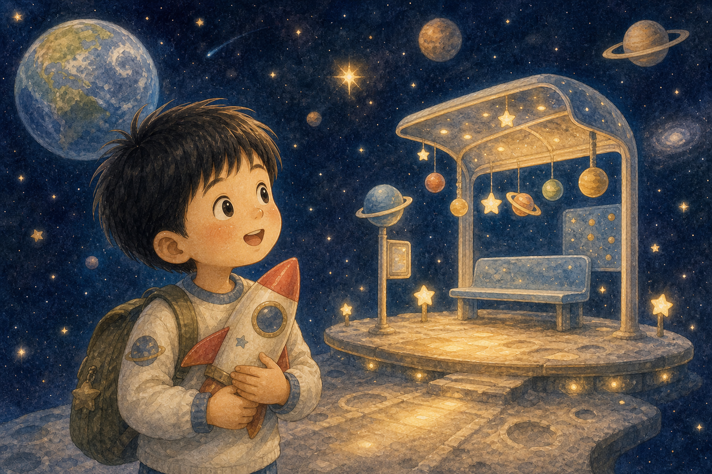
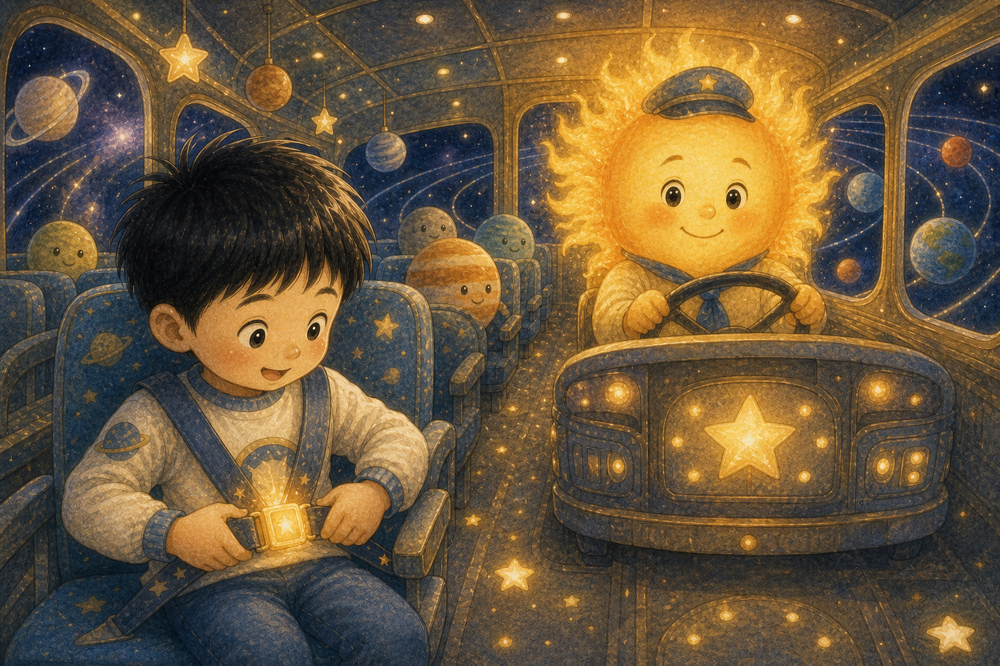
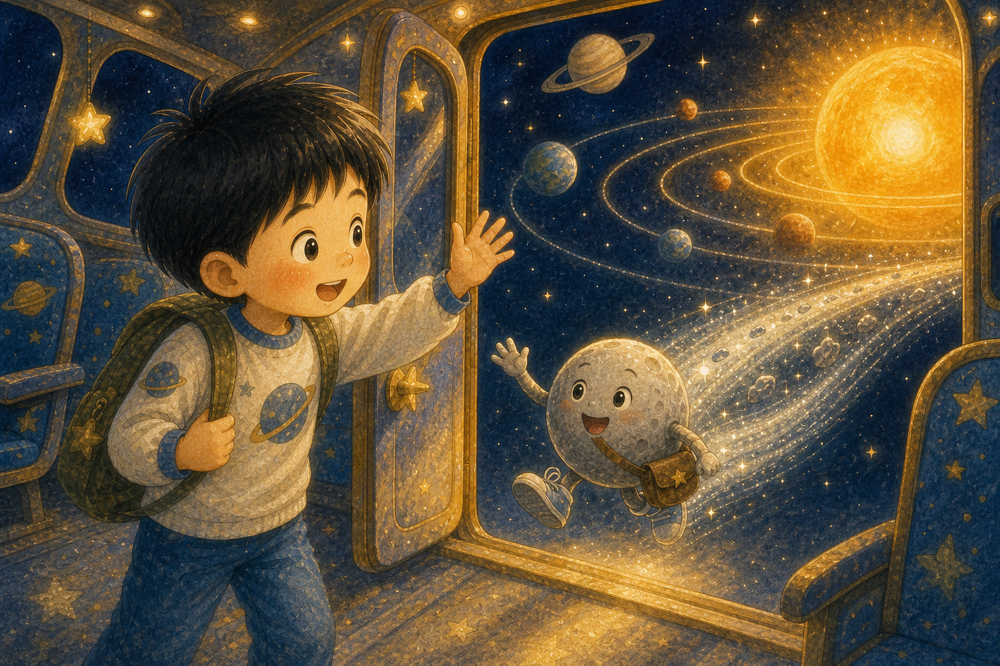
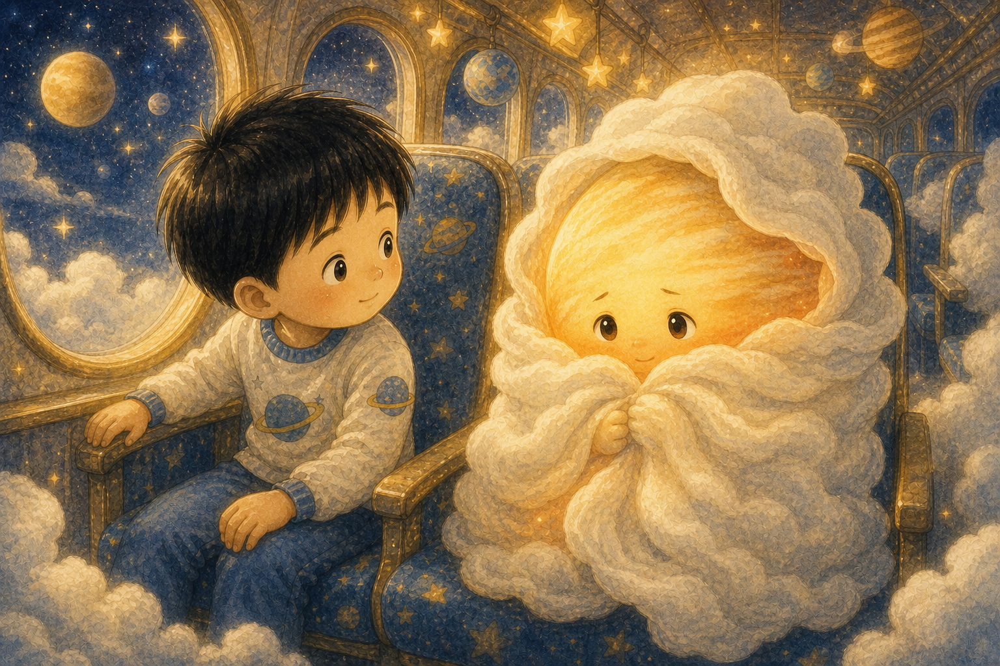
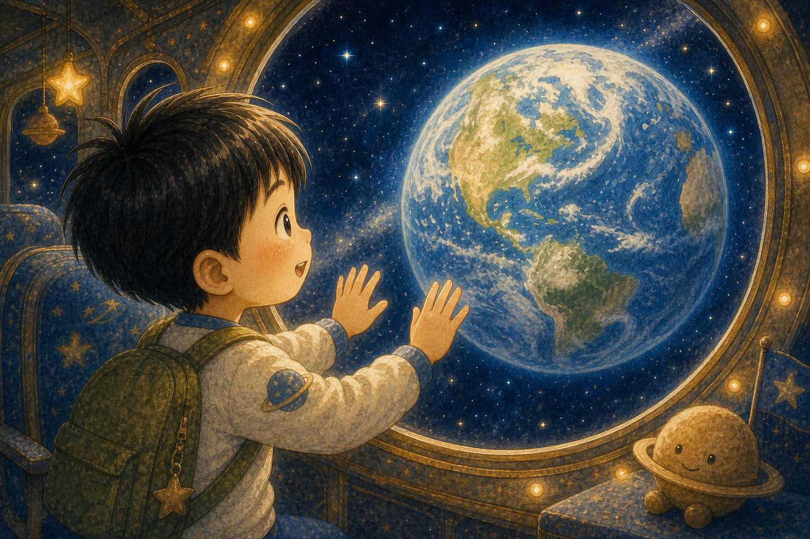
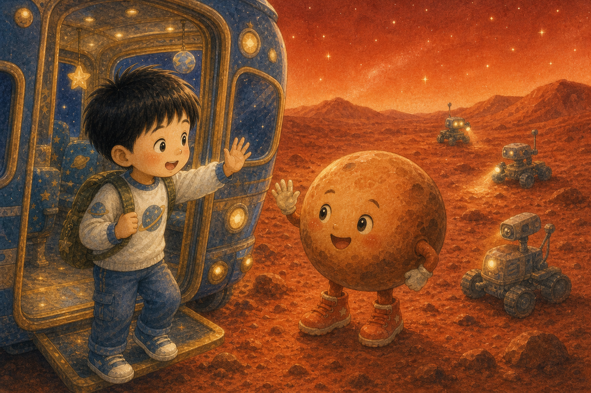
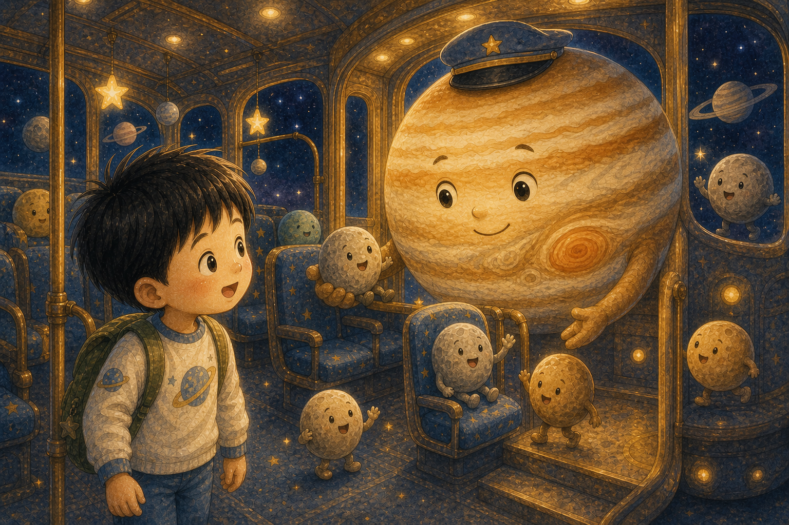
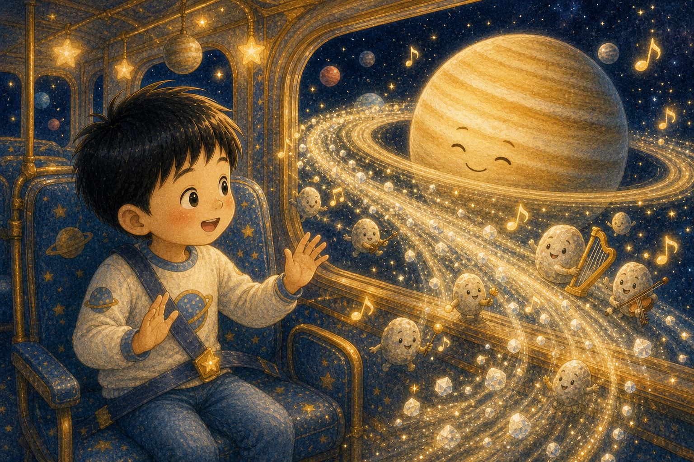
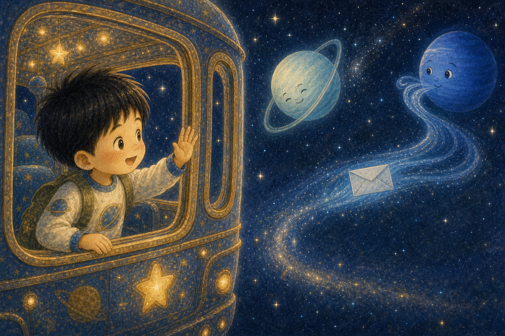
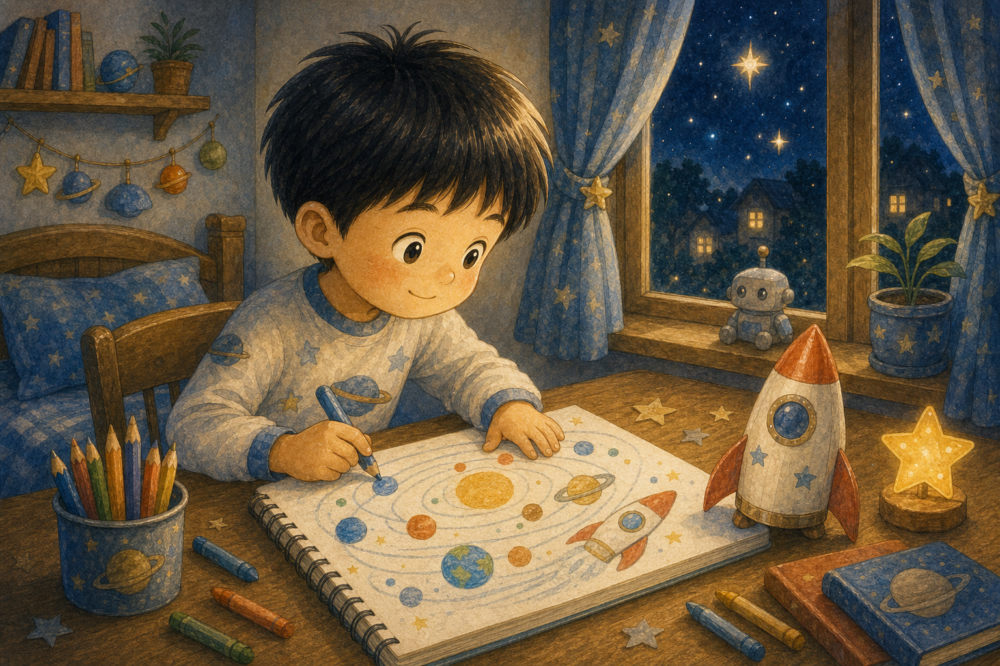

별빛 정류장
하늘이는 종이 로켓을 품에 안고 잠들었어요. 꿈속에서 눈을 뜨자 우주 한가운데에 반짝이는 정류장이 있었지요.
"태양계 버스에 오신 걸 환영해요!"

하늘이는 종이 로켓을 품에 안고 잠들었어요. 꿈속에서 눈을 뜨자 우주 한가운데에 반짝이는 정류장이 있었지요.
"태양계 버스에 오신 걸 환영해요!"

버스 가운데에는 태양 운전사가 앉아 있었어요. 태양은 환한 빛으로 하늘이의 안전벨트를 반짝 비추었답니다.
태양은 태양계 가족의 중심이었어요.

작고 빠른 수성이 쌩 하고 버스에 탔어요. 하늘이는 수성이 태양 가까이에서 가장 빨리 돈다는 걸 알게 되었지요.
작아도 씩씩한 친구가 있었어요.

금성은 두꺼운 구름 망토를 두르고 조용히 자리에 앉았어요. 하늘이는 금성이 밝게 보이지만 아주 뜨거운 행성이라는 이야기를 들었답니다.
겉모습만 보고 친구를 다 알 수는 없어요.

하늘이는 창밖으로 푸른 지구를 보았어요. 바다와 구름이 어울린 지구는 하늘이가 사는 소중한 집이었지요.
"우리 집도 태양계 가족이구나."

화성은 붉은 모래 신발을 신고 인사했어요. 하늘이는 언젠가 로봇 친구들이 화성에서 더 많은 비밀을 찾을 거라고 상상했어요.
궁금한 마음은 먼 곳까지 갈 수 있어요.

목성이 버스에 오르자 의자가 조금 삐걱했어요. 목성은 가장 큰 행성이지만 작은 달 친구들을 다정하게 챙겼지요.
큰 몸보다 더 큰 마음이 빛났어요.

토성은 반짝 고리를 흔들며 노래를 들려주었어요. 얼음과 돌 조각들이 딩딩, 통통 소리를 냈답니다.
서로 다른 소리가 하나의 음악이 되었어요.

천왕성은 옆으로 누운 춤을 추고, 해왕성은 푸른 바람 편지를 보냈어요. 하늘이는 먼 친구들도 태양계 가족이라는 걸 배웠지요.
멀리 있어도 함께 돌면 가족이에요.

여행이 끝나자 하늘이는 태양계 그림을 노트에 그렸어요. 모두 자기 길을 지키며 태양 둘레를 돈다는 약속도 함께 적었답니다.
그날 밤 하늘이의 방도 작은 태양계처럼 반짝였어요.